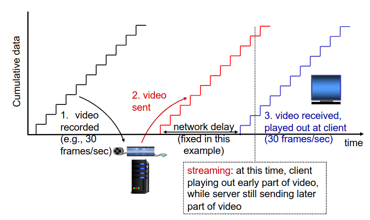
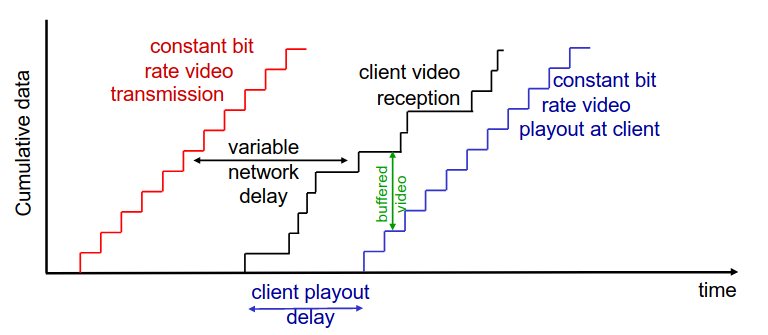
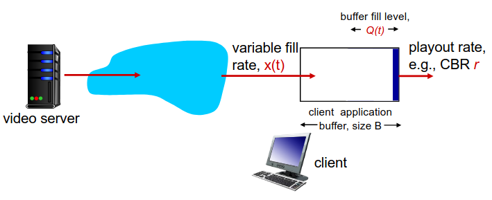

Multimedia Networking I
Multimedia Networking
3 tipos de aplicações de streaming
- Streaming de vídeo/áudio armazenados;
- streaming: pode começar o playout antes de fazer o download do ficheiro completo;
- armazenado (num servidor): pode transmitir o áudio/vídeo mais rápido do que a sua renderização (implica que exista um buffer de armazenamento de dados no cliente);
- é essencial que a rede tenha uma largura de banda, no mínimo, mediana;
- Exemplos: YouTube, Netflix, Hulu.
- Conversações de vídeo/áudio sobre IP;
- a natureza das conversas pessoais implicam um limite na tolerância do delay;
- é muito time sensitive;
- tolerante a perdas;
- se for vídeo, necessitará de uma largura de banda;
- Exemplos: Skype, Zoom, Viber, WhatsApp.
- Streaming de áudio ou vídeo ao vivo.
- Tem muitos requisitos temporais;
- Exemplo: Transmissão de um evento desportivo em direto.
Streaming de vídeo/áudio armazenados

- Desafios:
- Playout contínuo: assim que o playout de um cliente inicia, o playback deverá dar match com o timing original.
- O problema é que os delays da rede são variáveis (jitter)... então, precisa-se que o cliente tenha um buffer para dar match aos requisitos de playout.
- No fundo, isto irá tratar-se de uma espécie de buffer de amortecimento que irá guardando os dados para dar playout.
- Tornará a aplicação de lidar com algumas perdas;
- Se o buffer se esvaziar, o vídeo irá dar freeze.
- Quando o cliente iniciar o playout, é desejável que o vídeo mantenha um ritmo constante.
- Interação com o cliente: Pausar o vídeo, dar fast-forward, voltar atrás, saltar partes do vídeo;
- Retransmissão de pacotes perdidos.
- Playout contínuo: assim que o playout de um cliente inicia, o playback deverá dar match com o timing original.

Como se pode verificar, o buffer e o playout delay no lado do cliente permitem compensar o delay da rede e do jitter.
Buffering e Playout no lado do Cliente

- Inicialmente, irá encher o buffer até o playout iniciar em \( t_p \);
- Playout iniciará em \( t_p \);
- O enchimento do buffer irá variar ao longo do tempo da mesma forma que a taxa de enchimento \( x(t) \) variará e a taxa de playout \( r \) se mantém constante.
- Quando a média da taxa de enchimento for menor que a taxa de playout: buffer irá, eventualmente, esvaziar-se (vídeo irá dar freeze até o buffer de playout voltar a encher);
- Quando a média da taxa de enchimento for maior que a taxa de playout: o buffer nunca se irá esvaziar e o delay de plauout inicial é suficiente para absorver a variação da taxa de enchimento.
- initial playout delay tradeoff: a starvation do buffer é menos provável, no entanto, é necessário um maior delay até o utilizador iniciar a visualização do conteúdo.